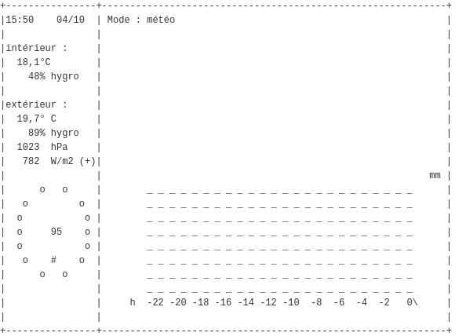
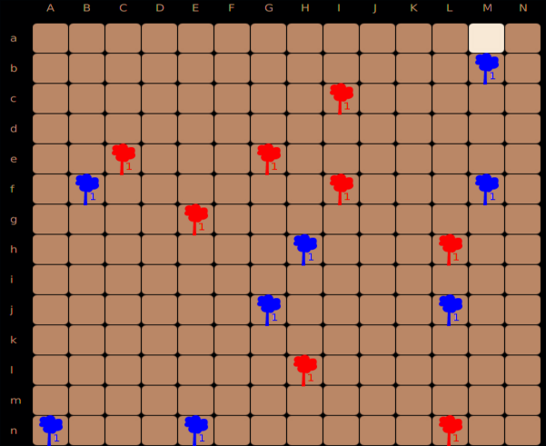
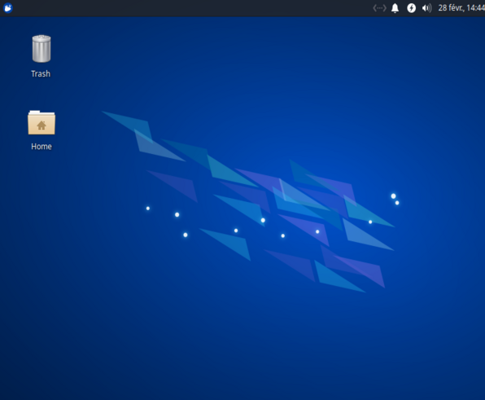
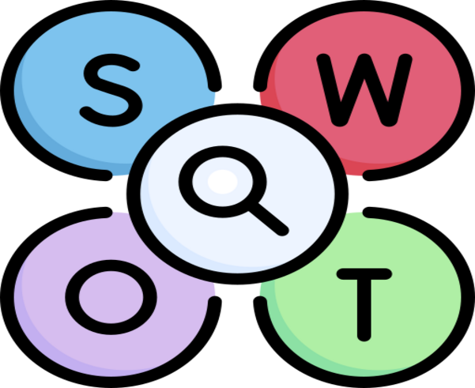

Bonjour !
Actuellement en 2ème de année de BUT Informatique, je suis un élève motivé à avoir une expérience
professionnelle solide. J'ai toujours souhaité vivre dans un monde dans lequel les tâches fastidieuses
seraient facilitées par la technologie, c'est pourquoi ma carrière future était toute tracée ! Toujours
à la recherche de nouvelles connaissances et opportunités, je suis ouvert à toute offre de stage ou
d'emploi !
Mes activités extra scolaires :
- Musculation en salle de sport
- Création d'un site web pour une marque de mode
Informatique :
Programmation Python, Java, C#
Développement Web :
HTML, CSS, PHP
Conception de bases de données :
Microsoft SQL Server, Oracle
Administration système :
Linux Ubuntu
Réalisation de projets
Méthodes Agiles :
Scrum
Versionnage :
GitHub, Gitlab
Langues :
Anglais - Courant (Niveau B2)
Espagnol - Courant

La réalisation de ce projet a été pour moi une réelle
mise en avant
du parcours à venir dans ma carrière professionelle,
et des moyens à mettre en place afin d'implémenter un
besoin client à l'aide d'un langage de
programmation,
tout en ayant à fournir un rapport sur ce projet et
expliquer clairement le code et son
fontionnement.
Il en découle alors pour moi de nombreux points
positifs, comme la mise en
place d'un planning optimisé pour travailler en équipe
et dans de bonne conditions, un
sens des responsabilités car il était important
de
fournir un code
fonctionnel qui répond
aux
besoins clients.
ODOMO
BIOSPHERE
Ce projet a été pour moi très riche en matière
d’apprentissage, durant les deux phases qui
constituaient ce projet, j’ai
pu entre-autre contribuer à la mise en place de deux
stratégies qui allaient etre attribués à une intelligence
artificielle.
Cela m'a permis d'apprendre comment apprivoiser une
tache donnée, que ce soit le cahier des charges
et les règles dictées par celle-ci ou bien meme les
méthodes de travail à utiliser.
Le principal gain qui découle de ce projet a été pour ma
part l'éveil de mon
esprit
logique, qui m'a permis de comprendre selon tel
ou tel cas
quelle était la ou les actions possibles, et
préférables.


Le « challenge » de cette SAE était d’installer une
machine virtuelle pour permettre à une équipe
de dev
de développer un nouveau jeu avec le langage go,
qu’il a donc fallu installer, ainsi qu’un IDE
pour s’en servir.
L’enjeu était donc ici de mettre en place une
machine avec un hardware adapté, un compte
administrateur et un compte développeur
qui ont donc chacun des droits définis selon leur
statut, il a également fallu mettre
en place l'outil git
pour réaliser un git clone ainsi que modifier le
prompt bash pour afficher de n’importe où
l’état de ce git.
Ainsi, ce projet m'a permis à moi et à mes camarades
de maitriser l'installation
d'une machine selon des caractéristiques
bien définis,
ainsi que comprendre comment
fonctionne un
terminal de commande et comment le
modifier pour y indiquer des élements
utiles.
MACHINE
SWOT
Ce projet m'a permis de mieux aborder ma vision d'une
entreprise.
En effet, j'ai pu ici réaliser avec mes camardes une
analyse fonctionnelle
d'une entreprise. Mais ce n'est pas tout, il a aussi
fallu observer
les différentes opportunités et menaces auxquelles
elle était confrontée.
Il en découle alors pour moi de nombreux points
positifs, comme la mise en
place d'un planning optimisé pour travailler en
équipe et dans de bonne conditions, une maitrise des
outils de recherche car il était important
de fournir des informations vérifiés et pertinentes
qui permet de mieux
comprendre l'environnement de l'entreprise.
